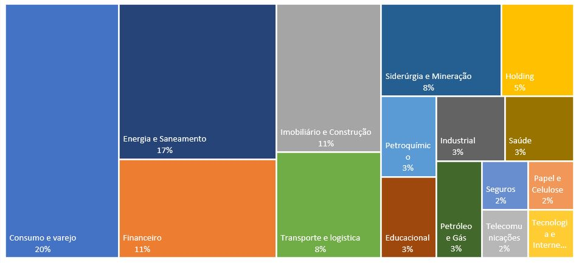

Decisão artificial?
Análise de dados e machine learning para operação no mercado financeiro


Caso queira, pode encontrar o código desenvolvido no Notebook abaixo.
Fonte dos dados: https://www.kaggle.com/berkerisen/wind-turbine-scada-dataset
Considerações Iniciais
A análise fundamentalista é um dos pilares do investimento em valor (famoso value investing) preconizado por grandes investidores como Benjamin Graham e Warren Buffet. Desse modo, esse modelo foi desenvolvido utilizando a análise das demonstrações de balanço patrimonial e de resultado do exercício (DRE) como fundamentos para investimento em empresas listadas na bolsa de valores.
Destaco que esta análise, em um primeiro momento, tem como foco a demonstração de um modelo de machine learning que determine se uma ação deva ser comprada ou não. Deixando de lado fatores relevantes na alocação de ativos como, por exemplo: setores, tamanho da empresa e governança corporativa.
Com relação as empresas escolhidas, foram selecionados diversos setores: consumo e varejo, energia e saneamento, financeiro entre tantas outras conforme a imagem abaixo. Com isso, eliminamos um possível viés setorial, uma vez que cada setor possui características particulares (regulação, custos, mercado internacional). A carteira tem como benchmark o índice Ibovespa, já que é composta apenas por ações e engloba tanto large caps como mid caps.
Base de dados
A elaboração da base de dados iniciou com a extração das demonstrações do site fundamentus e, posteriormente, foi feito um tratamento básico: alteração de títulos, índices e cabeçalhos. Além disso, foram extraídas as cotações dos papéis nas datas de divulgação das demonstrações, que geralmente são trimestrais, e unidas na base. Por fim, foi montado um dicionário python sendo as chave os nomes dos papéis e o balanço e a DRE sendo os valores.
Embora tanto o balanço patrimonial quanto a DRE possuam padrões de elaboração, sabe-se que cada empresa elabora com base na sua operação ocasionando demonstrações com linhas diferentes ou termos diferentes, mas sem deixar de lado o padrão de elaboração. Dessa forma, foram eliminadas as colunas que diferem muito de um padrão na tentativa de melhorar a base para aplicação do modelo restando 61 empresas (conforme tabela abaixo). Feito tudo isso, também foi constatado que as demonstrações apresentavam colunas com o mesmo nome então foi feito um pequeno ajuste para não gerar incosistência no modelo.
Após elaborada a base de dados, foi feito o tratamento dos valores vazios. Para isso foram contados os valores vazios por coluna e considerado uma regra que a coluna com mais de 50 observações vazias seria eliminada da base. Essa etapa é importante porque valores vazios em grande quantidade podem ocasionar inconsistências no modelo.
Com todo o tratamento feito, falta apenas estipular uma regra para que o modelo possa ter como base que decisão tomar, para isso arbitramos uma regra de que variações com relação ao Ibovespa de até 2% foram enquadradas como "Não Comprar" pois é uma variação pouco significativa e acaba sendo um ruído ocasionando erros de decisão. Já variações acima ou abaixo disso foram classificadas como "Comprar" e "Vender". Embora o modelo, não foque em avisar quando vender, essa classificação é importante para analisarmos os erros do modelo.
Análise exploratória
Iniciamos a análise da base elaborada através da criação do histograma das decisões para que possamos observar a distribuição dos valores. Feito isso, foi constatado valores muito próximos de 50% e que a classificação "Não comprar" apresentou baixo percentual, então essa classificação foi retirada anexada a classificação "Vender" deixando, por coincidência, os valores distribuídos simetricamente como mostram os gráficos abaixo.
Na tentativa de encontrar valores fortemente correlacionados, foi elaborado um gráfico que apresenta as correlações entre as colunas. No entanto, algumas colunas apresentam alta dependência como é o caso das colunas Ativo Total x Ativo Circulante e Passivo Circulante (apenas dois exemplos para eu não me alongar). Então foram eliminadas as colunas que apresentaram alta correlação e elaborado novamente o gráfico.
Machine Learning
Seleção de características
Após eliminar as correlações ainda restaram muitas características, porém nem sempre ter muitas características é bom para o modelo. Por isso foram selecionadas apenas as 10 mais importantes que foram selecionadas através de uma árvore de decisão. Essas características estão classificadas na tabela a seguir
Com as características selecionadas, foi aplicado um método de pré-processamento visando a normalização dos dados e separado os dados em treino e teste, após foi criado um modelo de puro chute (Dummy) para ser usado como referência para o modelo, ou seja, verificar se o modelo é melhor que puro chute.
Dentre as métricas de precisão e recall, foi utilizado como principal a métrica de precisão e o recall ficando como secundário, uma vez que estamos interessados no acerto das previsões com base na amostra e não no percentual do total das observações corretas.
Método utilizado
Após tentar vários métodos o que apresentou melhor resultado foi o Random Forest e comparando com o modelo de puro chute o desempenho foi superior.
Com o modelo selecionado, foi feito o tunning do modelo que nada mais é do que ajustar alguns parâmetros na tentativa de melhorar o resultado.
Por fim, foi feito o teste nos dados do último trimestre (dados de teste) de cada empresa para verificarmos a eficiência do modelo. Com isso foi obtido o resultado superior ao Ibovespa em aproximadamente 6.8%.
Conclusão
Considerando o resultado obtido, o teste do modelo foi bem sucedido, já que obteve-se uma rentabilidade considerável acima do índice. Dessa forma, fica claro que é possível a aplicação de um modelo de machine learning no auxílio para compra de ações com base em seus fundamentos. Porém, apenas um teste com um horizonte temporal maior seria possível de confirmar a tese. Na próxíma seção deixo uma opinião sobre o assunto considerando alguns aspectos qualitativos que não são levados em conta pelo modelo.
Opinião
Com relação a aplicação de machine learning como base para a tomada de decisões apresento algumas ressalvas.
Nas datas de divulgação das demonstrações (fundamentos) o preço da ação não necessariamente vai refletir no dia, as vezes leva um tempo até os fundamentos refletirem no preço. O fato de retirar os valores vazios para preparar a base pode eliminar fatores relevantes para a análise individual da empresa, uma vez que cada setor tem suas particularidades. No momento de aplicar o modelo, deve-se levar em consideração a seleção de ações, uma vez que ações de empresas grandes e consolidadas (large caps) respondem muito bem aos fundamentos, pois as perspectivas de crescimento são comedidas; já empresas menores (small e micro caps) estão muito suscetíveis à entrega de resultados podendo apresentar fundamentos não tão bons, mas suas perspectivas de crescimento são elevadas visando a multiplicação do valor da empresa, ou seja, concentram-se mais nas opcionalidades do que nos fundamentos. (ex: startup reporta prejuizo com promessa de lucro no futuro)
A utilização de iteligência artificial deve ser feita com muito cuidado e de forma consciente, pois ainda existem aspectos qualitativos que modelos matematicos não são capazes de abordar e compreender com precisão.
Destaco que nenhuma empresa aqui apresentada é recomendação de investimento.
Assim encerro mais uma análise e agradeço você por ter lido até aqui. Um abraço!